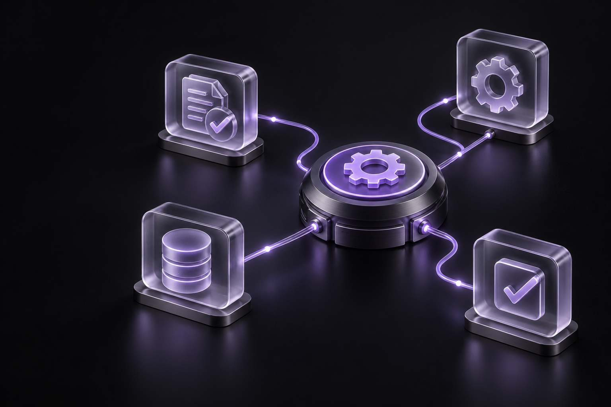

Wealth Management
GenAI-powered document processing delivered 98% extraction accuracy and 75% faster manual review , enabling enterprise-scale automation.
Explore our capabilities
Explore our capabilities
Explore our capabilities
Explore our capabilities
Explore our capabilities
Explore our capabilities
Challenges that we can help you overcome in accelerating your AI transformation.
Moving AI initiatives from experimentation to reliable, scalable enterprise solutions.
Managing deployment, monitoring, performance and constant improvement.
Effectively connecting fragmented data, complex models and enterprise systems.
Ensuring secure, responsible, explainable AI that aligns with business requirements.
Embedding AI into existing applications, workflows and technology ecosystems.
Wissen combines AI, ML, data engineering, cloud and automation expertise to build intelligent solutions around real business problems. From GenAI and predictive intelligence to intelligent automation, we help enterprises move from experimentation to scalable, governed and measurable AI outcomes.
GenAI-powered document processing delivered 98% extraction accuracy and 75% faster manual review , enabling enterprise-scale automation.
AI-powered visual monitoring achieved 94.4-99.5% detection accuracy , with zero-touch deployment and instant safety alerts across multiple sites.
AI-powered automation reduced manual effort by 60% , processing 7,200 forms daily with 2-3 hour submission turnaround across insurer portals.
AI-assisted test automation accelerated script development with reusable test components and a more stable automation framework .
Intelligence built around your business.
Building scalable AI and ML solutions across GenAI, LLMs, NLP, computer vision, MLOps and edge intelligence to solve complex enterprise problems.
Explore our capabilities
Combining AI, ML, GenAI and RPA to automate workflows, augment decision-making and improve productivity, accuracy and operational efficiency.
Explore our capabilities
 Data platform
Data platformData engineering, AWS
 Transportation
TransportationCloud migration, AWS
 BFSI & FinTech
BFSI & FinTechAI & ML
AI-driven document checks, risk scoring and decision support
 Data platform
Data platform Intelligent automation
Intelligent automationAI & ML
Spatial and typographic cues used to extract PDF data
 Telecom
TelecomProduction support
Scalable fault monitoring built on deep telecom expertise
From trading platforms to remote patient monitoring.
Browse all